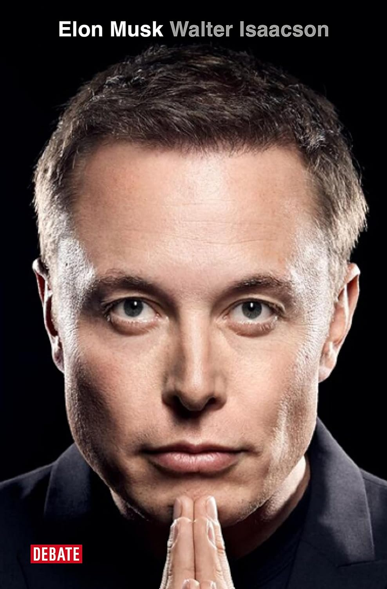
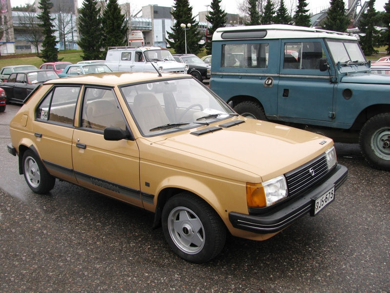
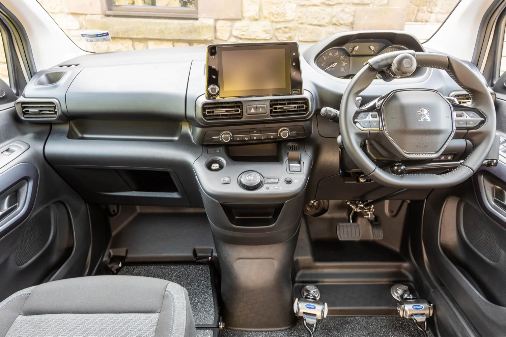

Diseño exterior
Tiene una estetica futurista la cual se pueden apreciar dos puertas abiertas hacia arriba y una pantalla tactil en la parte delantera
Elon Musk ha presentado en Los Ángeles el Cybercab, el taxi sin conductor de Tesla que prevé empezar a producir en 2026 y con un precio inferior a 20.000 dólares.
Musk añadió que revolucionará el transporte de personas porque su coste por kilómetro será 20 centavos, una quinta parte del de un autobús público. "Va a ser increíble", declaró el empresario, que llegó a la presentación del vehículo como pasajero de un Cybercab tras navegar sin conductor las calles de los estudios de Warner Bros. en Los Ángeles.
Los vehiculos autonomos representan una de las innovaciones más prometedoras en la industria del transporte actual.Y aunque presentan desafíos importantes como la regulación, la adaptación de infraestructuras y la confianza del público, grandes compañías tecnológicas y fabricantes de automóviles continúan desarrollando prototipos, con el objetivo de lanzar al mercado soluciones viables en los próximos años.

Como es el caso de Tesla, que ha presentado este viernes el nuevo Cybercap, el primer prototipo de taxi autonomo que según el fundador de la firma, Elon Musk, “pasará a los libros de historia”.
El futuro autónomo ya está aquí. Tenemos 50 coches totalmente autónomos aquí esta noche. Verán el Model 3, el Model Y y el Cybercab. Todos sin conductor. Esto es lo que las ciudades tendrán en el futuro. Podréis subiros en ellos. No tienen volantes ni pedales, así que espero que vaya bien” termina añadiendo Musk con ironía.
Elon Musk es un empresario e innovador sudafricano, conocido por su papel en la revolución de la tecnología moderna. Fundador y CEO de SpaceX, busca hacer accesible la exploración espacial y colonizar Marte.
También es el CEO de Tesla, Inc., donde impulsa la transición global hacia la energía sostenible a través de vehículos eléctricos. Musk ha cofundado PayPal, Neuralink y The Boring Company, además de adquirir Twitter.
Su visión audaz y enfoque en la innovación han establecido nuevos estándares en diversas industrias, convirtiéndolo en una de las figuras más influyentes del siglo XXI.
Tiene una estetica futurista la cual se pueden apreciar dos puertas abiertas hacia arriba y una pantalla tactil en la parte delantera
Espacio amplio para dos pasajeros, siendo hasta 10 veces mas seguro para los pasajeros
Pantalla tactil en la que podras controlar todas las funciones del sistema.
Aun sin conocer demasiados detalles mas que una presentacion que dio el propio CEO de Tesla Elon Musk mostrando y apareciendo montado en uno de estos nuevos vehiculos automatizados, podemos deducir una serie de ventajas y beneficios que este tipo de vehiculos podrian dar tanto en terminos de accesibilidad como en medio-ambiente o incluso en el factor economico.
| Economicos | Medio-Ambientales | Accesibilidad |
|---|---|---|
| Mas asequible (30 mil dolares) | Coche adaptado para personas con alguna descapacidad que les inpida conducir | El coche cuenta con un software el cual permitira elegir destino sin tocar la pantalla, simplemente hablando. |
| Coste de 20 centavos por kilometro | Completamente electrico | Hasta 10 veces mas seguro |
Este invento beneficiara sobre todo a esa parte de la poblacion que debido a algun tipo de discapacidad no pueden conducir, Cybercap les dara esa oportunidad de no depender del trasnporte publico siendo incluso mas barato y seguro, siendo asi un vehiculo que cumple con el primer estandar de estabilidad, ser accesible para todo el mundo
Desde la invención del automóvil en el siglo XIX, los vehículos han experimentado una evolución constante, no solo en términos de rendimiento y tecnología, sino también en accesibilidad. Durante las primeras décadas, los autos eran inaccesibles para personas con discapacidades físicas, pero con el tiempo, surgieron avances clave que han transformado la movilidad para todos.
En los años 70 y 80, comenzaron a aparecer los primeros vehículos adaptados con controles manuales, rampas y asientos giratorios, permitiendo a las personas con movilidad reducida conducir o ser transportadas con mayor facilidad. Este fue un hito crucial que abrió la puerta a un enfoque más inclusivo en el diseño automotriz.
Con la llegada del siglo XXI y el desarrollo de la tecnologia digital, se integraron sistemas avanzados como el control por voz, los sensores de proximidad, y las ayudas de conducción autónoma, lo que ha facilitado enormemente la conducción segura para personas con discapacidad visual, auditiva o motriz. Además, las sillas de ruedas eléctricas ahora pueden conectarse directamente a algunos vehículos, simplificando el proceso de entrar y salir sin ayuda externa.
Hoy en día, muchos vehículos vienen equipados de fábrica con tecnologías de accesibilidad, como puertas más anchas, asientos con ajustes automáticos y ayudas electrónicas que permiten a personas con diversas discapacidades disfrutar de una movilidad más independiente y segura.
